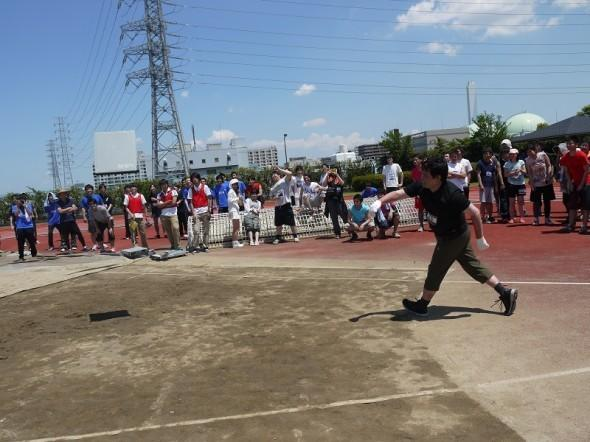

Hello World
CodeTengu Weekly 碼天狗週刊
CodeTengu Weekly 會在 GMT+8 時區的每個禮拜一早上 10:00 出刊，每一期會從目前的 curator 名單中選出三位來負責當期的內容，每一位 curator 各自負責不同的領域，如果你在這一期沒有看到自已感興趣的東西，說不定下一期就會有了。
你也可以瀏覽一下前幾期的內容，有價值的東西是不會過時的。
本期 curators：
- @tzangms - Oceanic / 人生海海 - 泰國不得了
- @fukuball - ImFukuball - 最近交了一個很正的女朋友，大家都很生氣
- @tonytonyjan - 右手寫程式，左手寫音樂
大家也可以 follow 一下 CodeTengu 的 Facebook 和 Twitter，有很多 Weekly 看不到的內容。有任何建議或疑問也可以來 Gitter 聊一聊，歡迎亂入 👺
 @tzangms
@tzangms
The Most Important Push Notification Metric
推播是現在手機 app 最重要的應用之一, 送太少不夠好, 送太多要不是關閉通知就是被移除 app, 該如何衡量?
 @fukuball
@fukuball
Analyze the Quality Of Your PHP Code - 分析你寫的 PHP 程式碼品質
各位 PHP 碼農們在拍胸脯保證自己寫出來的系統程式品質時，一定會使用 PHPUnit 跑跑測試，程式測試覆蓋率要達 90% 以上，然後 Coding Style 也都要用 Code Sniffer 全面檢查一遍才會心安。我們可能會使用 Continuous Integration (CI) 工具來整合這些工作，但 CI 終究不是一個完整的程式品質檢測工具，而 Qafoo Quality Analyzer 就是一個專注在程式品質檢測這項工作的工具。
Qafoo Quality Analyzer 除了可以跑測試、程式測試覆蓋率、檢查 Coding Style 之外，也使用了 PDepend 來檢測程式之間的相依性，而在最佳化程式品質降低程式之間的相依性時就往往需要程序員互相討論與介入，因此 Qafoo Quality Analyzer 使用了 React 及 D3.js 來實作高互動性的使用介面，讓碼農們討論最佳化程式品質時可以很容易的進行分析。
更重要的是這是一個 Open Source 的 Project，沒道理不用用看啊！
Setup Bootstrap Sass with Laravel Elixir - 使用 Laravel Elixir 整合 Bootstrap Sass
Laravel 使用了 Elixir 這個套件來整合前端的開發工具如 Gulp 等等，可以讓碼農們很方便的自動化一些開發工作，比如編譯及壓縮 CSS、JavasScript，甚至用來自動化跑測試。本篇文章主要是介紹如何用 Laravel Elixir 這個套件來整合 Bootstrap 的 Sass 版本，讓自己的 Laravel 開發專案可以很容易的整合 Boostrap 這個前端 Framework，算是我看過蠻言簡意賅的一篇。
延伸閱讀：
Why Self-Driving Cars Must Be Programmed to Kill - 探討自動駕駛汽車如何決定殺人（減輕死傷）的演算法
這是最近在網路上討論度很高的一篇文章，隨著汽車自動駕駛技術越來越成熟，有一個道德上兩難的問題漸漸浮現：當意外不可避免時，自動駕駛汽車的程式應該要選擇撞上前方 10 位行人以保護車主及乘客，或是轉向撞牆犧牲車主及乘客來保住 10 位行人的性命呢？本篇文章探討了這個問題，並且做了一些簡單的實驗來得出大眾的選擇以作為未來自動駕駛汽車如何決定殺人（減輕死傷）演算法的參考。
各位碼農對這個問題有什麼想法呢？或許法律應該制定自動駕駛汽車都應該要編碼為選擇保護多數人性命，但如果有人要付更多錢買會選擇保護車主的車子呢？如果寫這隻程式的碼農被老闆命令一定要把老闆車子的演算法改成保護車主，那又該怎麼做呢？畢竟 Volkswagen 都會做這種逃避檢測的程式了，難保未來不會有同樣的事情再發生。
說到 Volkswagen，各位碼農知道 auchenberg/volkswagen 這個逃避測試的套件嗎？好幽默的套件！
What a Deep Neural Network thinks about your #selfie - 用 Deep Neural Network 來看看你的自拍技術好不好
Deep Learning 漸漸使用在各種機器學習的應用，比如門牌的辨識、人臉辨識、中文字辨識、交通號誌辨識等等實用領域，但其實除了這些八股的應用之外，我們也可以把這樣的技術用在一些有趣、好玩就新奇的事情上，比如使用 Deep Neural Network 來看看你的自拍技術好不好，畢竟人生就是要保持一點幽默感嘛！
本篇文章所使用的機器學習演算法是 Convolutional Neural Networks，作者還很好心地用了很大篇幅地說明了什麼是 Convolutional Neural Networks 及這個演算法究竟是如何運作的概念（但還是不容易懂，我知道），當然也詳細解釋了最後的實驗結果，五百萬張的圖片中，兩百萬張作為訓練資料，Convolutional Neural Networks 找出了好的自拍照的法則：
- 身為女性先贏一半，Convolutional Neural Networks 認為的好自拍前 100 名沒有任何男性
- 臉需要佔圖片的 1/3
- 額頭要卡掉一些些，可能這樣看起來臉比較小吧，女生都愛這樣拍（內文真的這樣寫啦！請不要說我歧視！）
- 長髮
- 臉的飽和度要調高
- 要加濾鏡
- 邊邊要有留白
本文真的寫得很詳盡，很寫內容也很有趣，值得好好細讀一下！
@tonytonyjan
thoughtbot 釋出新一代的 Rails 開源後台： Administrate
筆者用 Rails 打造後台向來不用使用 Active Admin 或是 RailsAdmin，所以在 2014 Ruby Conference Taiwan 發表了「打造漂亮的 Rails 後台」，利用大家平時不常使用的 sacffold 去製作後台。
理由？
因為是那些開源的寫的是 DSL，不是 Rails，這個爭論就像是 rspec 之於 minitest 一樣，前者是寫 DSL，後者是寫 Ruby，所以一個會寫 Ruby 的人剛進入 minitest 其實很得心應手，但是進入 rspec 卻要花大半時間在翻文件。這個現象在使用 Active Admin 也是一樣的，你真的在寫 Rails 嗎？還是只是被 Active Admin 綁架呢？
Rails 圈的巨人公司 thoughtbot 也發現了一樣的問題，於是自己做了一個 gem。
還在找後台的方案嗎？不妨給 administrate 一個機會吧 :)
第二屆 Ruby 程式碼炫砲大賽
第二屆 Ruby 程式碼炫砲大賽在今年 Ruby Kaigi 又開辦啦，2014 因停辦一次，筆者無緣參加，這次有幸投了一份用正規表達式去解直因數分解的程式碼，希望有什麼成果 w
炫砲大賽就是用不尋常或是創意的方式寫 Ruby，例如 2013 年的得獎作品「best way to return true」：
$ruby.is_a?(Object){|oriented| language}
也有一些你絕對想不到的奇技淫巧，例如用 Ruby 的 ObjectSpace 去實作 Brainfuck 的直譯器等，上屆得獎作品在此：https://github.com/tric/trick2013。

Ruby SSE Server 動手做
照片是日本硬體製造商 Speedlink 在東京舉辦的 server 投擲大賽，誰能把 server 推得最遠，可以得到最高的分數，圖片中的機器值 50 萬日幣，這也是名符其實的 push server。
本篇介紹 Ruby 如何使用 Rails 或是不使用 Rails 做到即時串流服務，以及介紹在面對 C10K 問題時可選用的方案。
Random Cool Stuff
在 Steam 上預購 Fallout 4
為了慶祝 Fallout 4 即將在本週的 11 月 10 日上市，所以下禮拜的 CodeTengu Weekly 停刊一週（誤）。
由 @vinta 分享。